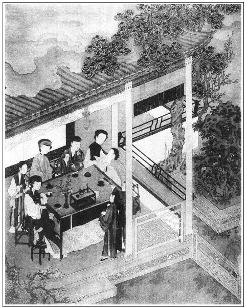

張回夫吹簫之憶，直追至內室乞恩時，故金蓮不憤也。
玉樓生日，自掃雪後一寫，至此又一寫，蓋言去年花開顏色改，今年花開復誰在也。又是前後章法。
新試白綾帶，已為後文一死作地。而不憤憶吹簫之後，金蓮復來，蓋又為撒潑一回作引。總之，自瓶兒死後，至此後撒潑，總寫金蓮之肆志得意以取辱也。
玉簫留果子，蓋為下文過舌地也。
此回方將寫玉簫一人之意說出。蓋書僮附瓶兒而私玉簫，然則玉簫又銀瓶之對。且玉簫為西門傳遞消息之人，今加一「憶」字，則水流花謝，天上人間，已有無窮之感，已將上文無數用玉簫處一結。下文即用玉簫，皆吹落梅花，吹散殘春，非復如上文之吹開消息，故用一「憶吹簫」。看者止知復點瓶兒，不知卻是結束玉簫。不然，玉簫乃特特用筆寫出之人，與春梅同例齊等，不一結束，豈成筆墨。有此一結，後文便可輕輕收拾於翟管家宅內去，不嫌簡略。不然，後文寫春梅好，還是收拾玉簫好？此文字苦心處，無如人盡埋沒他也。
以上凡寫金蓮淫處，與其輕賤之態處已極，不為作者偏能描魂捉影，又在此一回內，寫其十二分淫，一百二十分輕賤。真是神工鬼斧，真令人不能終卷再看也。如「把手在臉上這點兒那點兒羞他」，又「慌的走不迭」，又「藏在影壁後黑影裡悄悄聽覷」，又「點著頭兒」，又云「這個我不敢許」，真是淫態可掬，令人不耐看也。文字至此，化矣哉！
「不憤憶吹簫」，卻用幾番描寫。唱《集賢賓》時，一番描寫；西門吃酒進來，金蓮聽覷，一番描寫；西門前邊去，金蓮後來，又一番描寫。極力將金蓮寫得暢心快意之甚，驕極滿極，輕極浮極，下文一激便撒潑，方和身皆出，活跳出來也。文人用筆，如此細心費力，千古之心，卻問誰哉！我不覺為之大哭十日百千日不歇，然而又大笑不歇也。
玉簫轉子兒，正是結出。此回特為玉簫結文，不為瓶兒，明眼人自知。後用玉樓，不許玉簫近前，又是作者特重玉樓以襯金蓮處，又自言結住玉簫不寫也。
此回特寫春梅與西門一宿，與收春梅文字一映，為後文之春梅出落春信，又結西門慶之春梅也。夾敘秋菊，以與上無數打秋菊一總，為含恨地也。總之，此回俱是照後作結的文字，看他一路寫去，有心者自見也。
五戒轉世，又是西門轉世之影，看他有一語空閒無謂之文乎？
梵僧藥又加白綾帶，已極淫慾之事，不為下文更有頭髮托子在也。文字必用十二分滿足寫法。
寫生處只在一二語。看他寫金蓮狂淫，止用「兩手按著他肩膊，一舉一坐」，便使狂淫人已活現，與品玉文中「捉的龜頭刮答刮答怪響」一語活現，皆一樣筆法也。
此回用伯爵說吳大舅為都根主子，已為後西門死，伯爵囑敬濟作照。
金蓮說「孟三姐好日子，不該唱離別之詞」，又是作者明點此回玉樓生日，為收煞之文也。
數果子，又為打迎兒數角子遙對，總是收煞之文。
內雲去年玉樓生日還有瓶兒，不知明年玉樓生日已無西門，止有敬濟酒醉作鬧，以反照二十一回內玉樓生日。信乎作者以玉樓綱紀眾人也，以玉樓生日起結諸回文字也。須放眼觀之。
詞曰：
喚多情，憶多情，誰把多情喚我名？喚名人可憎。
為多情，轉多情，死向多情心不平。休教情重輕。
──右調《長相思》

話說應伯爵回家去了。西門慶就在藏春塢坐著，看泥水匠打地炕。牆外燒火，安放花草，庶不至煤煙熏觸。張夾蓋為春梅一透消息，豈閒筆寫閒事也？忽見平安拿進帖兒，稟說：「帥府周爺差人送分資來了。」盒內封著五封分資：周守備、荊都監、張團練、劉薛二內相，每人五星，粗帕二方，奉引賀敬。張夾比十弟兄分資何如？西門慶令左右收入後邊，拿回帖打發去了。
且說那日，楊姑娘與吳大妗子、潘姥姥坐轎子先來了，然後薛姑子、大師父、王姑子，並兩個小姑子妙趣、妙鳳，並郁大姐，都買了盒兒來，與玉樓做生日。張夾玉樓生日起，掃雪以後，熱事方濃；玉樓生日結，此後冷機已動也。月娘在上房擺茶，眾姊妹都在一處陪侍。須臾吃了茶，各人取便坐了。張夾先將眾人一總，為下文也。
潘金蓮想著要與西門慶做白綾帶兒，即便走到房裡，拿過針線匣，揀一條白綾兒，將磁盒內顫聲嬌藥末兒裝在裡面，周圍用倒口針兒撩縫的甚是細法，張夾此際芳心落想何處。預備晚夕要與西門慶雲雨之歡。不想薛姑子驀地進房來，送那安胎氣的衣胞符藥與他。張夾正中下懷，故作滿語，為後作地。這婦人連忙收過，張夾寫出私心。一面陪他坐的。薛姑子見左右無人，便悄悄遞與他，繡眉此時有他說嘴處矣。說道：「你揀個壬子日空心服，到晚夕與官人在一處，管情一度就成胎氣。張夾越滿許，越令後文不能寧耐也。你看後邊大菩薩，也是貧僧替他安的胎，今已有了半肚子了。我還說個法兒與你：縫個錦香囊，我書道硃砂符兒安在裡面，帶在身邊，管情就是男胎，好不准驗。」繡旁又出一奇，妙。張夾更妙，總是故作滿語。這婦人聽了，滿心歡喜，一面接了符藥，藏放在箱內。拿過歷日來看，二十九日是壬子日。於是就稱了三錢銀子送與他，張夾是金蓮出手。說：「這個不當什麼，拿到家買菜吃。等坐胎之時，我尋疋絹與你做衣穿。」張夾與月娘對照，金蓮可矣。月娘愈覺不堪。薛姑子道：「菩薩快休計較，我不像王和尚那樣利心重。繡眉一味貪婪，卻夾佛法果報出之。說得似餓鬼，似羅剎，又似活菩薩。此輩可笑可憎，莫不具見。張夾錯詞總是現身說法，故能入妙。前者因過世那位菩薩唸經，他說我攙了他的主顧，好不和我嚷鬧，到處拿言語喪我。我的爺，隨他墮業，張夾責人甚明。我不與他爭執。我只替人家行好事，救人苦難。」張夾自己之孽，即好事也。婦人道：「薛爺，你只行你的事，各人心地不同。我這勾當，你也休和他說。」薛姑子道：「法不傳六耳，我肯和他說！張夾不是瞞他，正是瞞月娘也。去年為後邊大菩薩喜事，他還說我背地得多少錢，擗了一半與他才罷了。張夾補出不堪。一個僧家，戒行也不知，利心又重，張夾自道出。得了十方施主錢糧，不修功果，張夾自道出。到明日死後，披毛戴角還不起。」張夾自道出。說了回話，婦人教春梅：「看茶與薛爺吃。」那姑子吃了茶，又同他到李瓶兒那邊參了靈，張夾點明，為下文照眼。方歸後邊來。
約後晌時分，月娘放桌兒炕屋裡，請眾堂客並三個姑子坐的。張夾先一敘住，安頓時三姑子、大妗子、楊姑娘也。又在明間內放八仙桌兒，鋪著火盆擺下案酒，與孟玉樓上壽。張夾方是上壽。不一時，瓊漿滿泛，玉斝高擎，孟玉樓打扮的粉妝玉琢，張夾二月春光，呼吸欲動。先與西門慶遞了酒，然後與眾姊妹敘禮，安席而坐。陳敬濟和大姐又與玉樓上壽，行畢禮，張夾與玉皇廟中來，醉後行禮，明晦自是不同。就在旁邊坐下。廚下壽麵點心添換，一齊拿上來。眾人才吃酒，只見來安拿進盒兒來說：「應保送人情來了。」西門慶叫月娘收了，就教來安：「送應二娘帖兒去，就請你應二爹和大舅來坐坐。我曉的他娘子兒，明日也是不來，請你二爹來坐坐罷，改日回人情與他就是了。」來安拿帖兒同應保去了。西門慶坐在上面，不覺想起去年玉樓上壽還有李大姐，張旁誰回顧瓶兒，卻又是將玉樓兩個生日一齊捏攏。今日妻妾五個，只少了他，由不得心中痛酸，眼中落淚。繡眉遍插茱萸少一人，那得不悲！張夾文字真是杓水不漏，又是刺骨寫出。
不一時，李銘和兩個小優兒進來了。月娘吩咐：「你會唱『比翼成連理』不會？」張夾月娘亦驕極矣，滿極矣。南瓦金鉤將西斜之兆，已見於此，卻是不知有瓶兒死者。然則牆頭物已盈囊，樓下物，又封鎖，今日又暢極矣。寫此一曲與「憶吹簫」反照，正是刻骨寫月娘奸處。韓佐道：「小的記得。」才待拿起樂器來彈唱，被西門慶叫近前，吩咐：「你唱一套『憶吹簫』我聽罷。」張夾月娘方云「比翼」，西門乃「憶吹簫」。眼中亦不知有月娘在者。兩個小優連忙改調唱《集賢賓》「憶吹簫，玉人何處也。」唱了一回，唱到「他為我褪湘裙杜鵑花上血」，張夾下一路細點此曲，如梅花亂落。潘金蓮見唱此詞，就知西門慶念思李瓶兒之意。繡旁慧心處可愛。及唱到此句，在席上故意把手放在臉兒上，這點兒那點兒羞他，繡旁畫。張夾淫態。月娘不爭，而金蓮爭，又奇。說道：「孩兒，那裡『豬八戒走在冷鋪中坐著──你怎的醜的沒對兒』！一個後婚老婆，又不是女兒，那裡討『杜鵑花上血』來？張夾放倒自己說人。好個沒羞的行貨子！」西門慶道：「怪奴才，聽唱罷麼，我那裡曉得什麼。單管胡枝扯葉的。」只見兩個小優又唱到：「一個相府內懷春女，忽剌八拋去也。我怎肯恁隨邪，又去把牆花亂折！」那西門慶只顧低著頭，留心細聽。繡旁畫。張夾刺骨相思，曲曲寫出。須臾唱畢，這潘金蓮就不憤他，兩個在席上只顧拌嘴起來。張夾可知炕屋安桌，是安頓數人，卻又是借此一頓。月娘有些看不上，便道：「六姐，你也耐煩，兩個只顧強什麼？楊姑奶奶和他大妗子丟在屋裡，冷清清的，沒個人兒陪他，你每著兩個進去陪他坐坐兒，我就來。」張夾可知炕屋安桌，是安頓數人，卻又是借此一頓。當下金蓮和李嬌兒就往房裡去了。
不一時，只見來安來說：「應二娘帖兒送到了。二爹來了，大舅便來。」西門慶道：「你對過請溫師父來坐坐。」因對月娘說：「你吩咐廚下拿菜出來，我前邊陪他坐去。」又叫李銘：「你往前邊唱罷。」張夾有春梅向日罵意在內。李銘即跟著西門慶出來，到西廂房內陪伯爵坐的。又謝他人情：「明日請令正好歹來走走。」伯爵道：「他怕不得來，家下沒人。」良久，溫秀才到，作揖坐下。伯爵舉手道：「早晨多有累老先生。」溫秀才道：「豈敢。」吳大舅也到了，相見讓位畢，一面琴童兒秉燭來，四人圍暖爐坐定。來安拿春盛案酒擺在桌上。伯爵燈下看見西門慶白綾襖子上，罩著青緞五彩飛魚蟒衣，張牙舞爪，頭角崢嶸，揚須鼓鬣，金碧掩映，蟠在身上，張夾極力一描。諕了一跳，張夾寫盡小人身份。問：「哥，這衣服是那裡的？」西門慶便立起身來，笑道：張夾又寫盡小人身份。「你每瞧瞧，張夾此句是一意。猜是那裡的？」張夾此句又是一意。伯爵道：「俺每如何猜得著。」西門慶道：「此是東京何太監送我的。繡眉賣弄處，鬚眉俱動。張夾好榮耀。我在他家吃酒，因害冷，他拿出這件衣服與我披。這是飛魚，因朝廷另賜了他蟒龍玉帶，他不穿這件，就送我了。張夾送了奇甚。奢僭至此，書亦不能細為點出矣。此是一個大分上。」張夾足一句。伯爵極口誇道：「這花衣服，少說也值幾個錢兒。此是哥的先兆，張夾此句是一意，言將必實受穿此也。到明日高轉做到都督上，愁沒玉帶蟒衣？何況飛魚！只怕穿過界兒去哩！」繡眉贊處妙在深一層，方暢其賣弄之意，富貴人家自少此輩不得。張夾更妙，此又是一意，言將來尚不止穿此也。小人如畫。說著，琴童安放鍾箸，拿酒上來。李銘在面前彈唱。伯爵道：「也該進去與三嫂遞杯酒兒才好，如何就吃酒？」西門慶道：「我兒，你既有孝順之心，往後邊與三嫂磕個頭兒就是了，說他怎的？」伯爵道：「磕頭到不打緊，只怕惹人議論我做大不尊，到不如你替我磕個兒罷。」被西門慶向他頭上打了一下，罵道：「你這狗才，單管恁沒大小！」伯爵道：「有大小到不教孩兒們打了。」張夾戲處是生日酒，故妙。兩個戲說了一回，琴童拿將壽麵來，西門慶讓他三人吃。自己因在後邊吃了，就遞與李銘吃。那李銘吃了，又上來彈唱。伯爵叫吳大舅：「吩咐曲兒叫他唱。」大舅道：「不要索落他，隨他揀熟的唱罷。」西門慶道：「大舅好聽《瓦盆兒》這一套。」一面令琴童斟上酒，李銘於是箏排雁柱，款定冰弦，唱了一套「叫人對景無言，終日減芳容」，張夾心事，卻俱是冷調。下邊去了。只見來安上來稟說：「廚子家去，請問爹，明日叫幾名答應？」西門慶吩咐：「六名廚役、二名茶酒，酒筵共五桌，俱要齊備。」來安應諾去了。吳大舅便問：「姐夫明日請甚麼人？」西門慶悉把安郎中作東請蔡九知府說了。吳大舅道：「既明日大巡在姐夫這裡吃酒，又好了。」西門慶道：「怎的說？」吳大舅道：「還是我修倉的事，要在大巡手裡題本，望姐夫明日說說，教他青目青目，到年終考滿之時保舉一二，就是姐夫情分。」西門慶道：「這不打緊。大舅明日寫個履歷揭帖來，等我取便和他說。」大舅連忙下來打恭。伯爵道：「老舅，你老人家放心，你是個都根主子，張夾已為吳大舅出落一番，以便後文死時用他也。不替你老人家說，再替誰說？管情消不得吹噓之力，一箭就上垛。」繡眉說得兩人都快活，妙舌。前邊吃酒到二更時分散了，西門慶打發李銘等出門，就吩咐：「明日俱早來伺候。」李銘等應諾去了。小廝收進傢伙，上房內擠著一屋裡人，張夾又一總。聽見前邊散了，都往那房裡去了。張夾方過入金蓮。
卻說金蓮，只說往他屋裡去，慌的往外走不迭。張夾寫生，有心事便如此。不想西門慶進儀門來了，他便藏在影壁邊黑影兒裡，張夾一影壁，月娘燒香，西門站立；蕙蓮蒙愛，又站立；獨玉樓兩次生日，卻用金蓮兩次站立此處。夫西門站立，所以丑月娘也；蕙蓮站立，所以警瓶兒。言蕙蓮如此老到周密，猶為潛蹤者所察，況瓶兒之疏略乎！至金蓮兩次立此，皆是玉樓生日，作者蓋言生也不辰。每逢此等人當路而立，使我幾乎不生。蓋此意也。試將掃雪後，玉樓生日文字，合此回玉樓生日文字比類一觀，便知用筆深意。故此書豈可使粗心人看也。看著西門慶進入上房，悄悄走來窗下聽覷。繡眉欲為稍果子打秋菊線索，偏在忙裡下針，寧與人指之為冗為淡，不與人見其神龍首尾，高文妙法，子長以下所無。張夾為後文淘氣做引。只見玉簫站在堂屋門首，說道：「五娘怎的不進去？」又問：「姥姥怎的不見？」張夾處處點玉簫，明眼自知。金蓮道：「老行貨子，張夾娘母而雲行貨，奇絕。他害身上疼，往房裡睡去了。」良久，只聽月娘問道：「你今日怎的叫恁兩個新小王八子？唱又不會唱，只一味『三弄梅花』。」玉樓道：「只你臨了教他唱『鴛鴦浦蓮開』，張夾鴛浦蓮開，非復蘭塘舊事矣。他才依了你唱。好兩個猾小王八子，不知叫什麼名字，一日在這裡只是頑。」西門慶道：「一個叫韓佐，一個叫邵謙。」月娘道：「誰曉的他叫什麼謙兒李兒！」不防金蓮躡足潛蹤進去，立在暖炕兒背後，忽說道：「你問他？正經姐姐吩咐的曲兒不叫他唱，平白胡枝扯葉的教他唱什麼『憶吹簫』，支使的小王八子亂騰騰的，不知依那個的是。」張夾與上文金蓮不憤語，一氣接入，故妙。活是一個人話也。玉樓「噦」了一聲，扭回頭看見是金蓮，張夾此處玉樓虛心，又襯金蓮撒潑。便道：「這個六丫頭，你在那裡來？猛可說出話來，倒諕我一跳。繡眉金蓮幽蹤與玉樓小膽，又作一笑，映出妙手。單愛行鬼路兒。你從多咱走在我背後？」小玉道：「五娘在三娘背後，好少一回兒。」張夾總為後文下線也。金蓮點著頭兒張夾又是一樣淫態。向西門慶道：「哥兒，你膿著些兒罷了。你那小見識兒，只說人不知道。他是甚『相府中懷春女』？他和我都是一般的後婚老婆。繡旁妙在放倒自己。張夾又一提出，寫不憤，是不憤。什麼他為你『褪湘裙杜鵑花上血』，三個官唱兩個喏，誰見來？孫小官兒問朱吉，別的都罷了，這個我不敢許。張夾淫態可掬。可是你對人說的，自從他死了，好應心的菜兒也沒一碟子兒。沒了王屠，連毛吃豬！你日逐只吃屎哩？俺們便不是上數的，可不著你那心罷了。一個大姐姐這般當家立紀，也扶持不過你來，繡眉提出月娘作主，不獨題目正大，得樹敵之意，自使西門慶惱不得。張夾又聳湧月娘。可可兒只是他好。張夾不憤在此。他死，你怎的不拉住他？當初沒他來時，你怎的過來？如今就是諸般兒稱不上你的心了。題起他來，就疼的你這心裡格地地的！拿別人當他，借汁兒下面，繡旁忽插入如意，不費一痕氣力，神化之筆。也喜歡的你要不的。只他那屋裡水好吃麼？」張夾不憤處又在此。然則說瓶兒處是暢說如意處，乃現前真醋也。月娘道：「好六姐，常言道：好人不長壽，禍害一千年。繡旁月娘出語亦毒。張夾月娘亦為所動，卻是月娘自己深心。自古鏇的不圓砍的圓。你我本等是遲貨，應不上他的心，隨他說去罷了。」金蓮道：「不是咱不說他，他說出來的話灰人的心。只說人憤不過他。」那西門慶只是笑，罵道：「怪小淫婦兒，胡說了你，我在那裡說這個話來？」金蓮道：「還是請黃內官那日，繡眉六黃太尉何等勢焰，金蓮「黃內官」三字寫得冰冷，可見真正情婦人、淫婦人，胸中原無富貴。你沒對著應二和溫蠻子說？繡旁偏他記得。張夾是金蓮不是月娘，若是月娘亦能清記，卻不說出。怪不的你老婆都死絕了，就是當初有他在，也不怎麼的。到明日再扶一個起來，張夾又說到如意。總是瓶兒死是一大快，如意寵又是一大不快，故絮絮叨叨有許多說話也。和他做對兒就是了。繡旁倒底不放如意。賊沒廉恥撒根基的貨！」說的西門慶急了，跳起來，趕著拿靴腳踢他，那婦人奪門一溜煙跑了。繡眉再呆講，便贅矣。走得賊甚，且賊得有線索。張夾走處是最得意處。
這西門慶趕出去不見他，只見春梅站在上房門首，就一手搭伏春梅肩背往前邊來。繡旁移花接木，妙。張夾寫其母子，一時得意處如畫。月娘見他醉了，巴不的打發他前邊去睡，要聽三個姑子宣卷。於是教小玉打個燈籠，送他前邊去。金蓮和玉簫站在穿廊下黑影中，張夾又寫玉簫。夫立影其前已當門矣；今站穿廊下，是入室矣。總是痛恨不辰生子，淫邪在座之日也。西門慶沒看見，逕走過去。玉簫向金蓮道：「我猜爹管情向娘屋裡去了。」金蓮道：「他醉了，快發訕，繡旁六字簡透。張夾得意語。由他先睡，等我慢慢進去。」繡眉搶白西門慶一頓，而西門慶又去尋他，要強好勝之心遂矣。復往後邊來，一者湊春梅之趣，二者要顯出由他自睡，不因搶白而小心周旋他也張夾今而後，左顧右盼，再無六娘房可以邀之而去矣。然而，如意雖在，亦料其不敢爭衡，故此一時得意極矣。為下文誤壬子日作反對。這玉簫便道：「娘，你等等，我取些果子兒捎與姥姥吃去。」繡旁又映愛小便宜。張夾三章約中一則也。於是走到床房內，拿些果子遞與婦人，婦人接的袖了，一直走到他前邊。只見小玉送了回來，說道：「五娘在那邊來？爹好不尋五娘。」
金蓮到房門首，不進去，悄悄向窗眼望裡張覷，看見西門慶坐在床上，正摟著春梅做一處頑耍。張夾春梅發動矣。恐怕攪擾他，連忙走到那邊屋裡，將果子交付秋菊。因問：「姥姥睡沒有？」秋菊道：「睡了一大回了。」金蓮囑咐他：「果子好生收在揀妝內。」又復往後邊來。只見月娘、李嬌兒、孟玉樓、西門大姐、大妗子、楊姑娘，並三個姑子帶兩個小姑子，坐了一屋裡人。張夾又一總。蓋寫金蓮今日得意殺也。薛姑子便盤膝坐在月娘炕上，繡旁像個活佛。張夾雪滿，小園花事闌珊矣。當中放著一張炕桌兒，炷了香，眾人都圍著他，聽他說佛法。只見金蓮笑掀簾子進來，繡眉一笑字接前脈，斷而復斷，且寫出滿肚皮賣弄。張夾使人回想叉竿舊事，為之一笑。月娘道：「你惹下禍來，他往屋裡尋你去了。你不打發他睡，如何又來了？我還愁他到屋裡要打你。」張夾月娘又是不見此日金蓮。金蓮笑道：「你問他敢打我不敢？」繡旁自要說嘴。張夾自雲非復向日之金蓮矣。月娘道：「你頭裡話出來的忒緊了，他有酒的人，一時激得惱了，不打你打狗不成？俺每倒替你捏兩把汗，原來你到這等潑皮。」張夾後文卿試一試何如？金蓮道：「他就惱，我也不怕他，看不上那三等兒九做的。張夾自誇語。正經姐姐吩咐的曲兒不教唱，張夾又奉承月娘。且東溝犁西溝耙，唱他的心事。就是今日孟三姐的好日子，也不該唱這離別之詞。繡眉又樹一敵，機鋒圓利。張夾再挑玉樓，卻是作者結文正意。人也不知死到那裡去了，偏有那些佯慈悲假孝順，張夾得意殺矣。看者須看此日得意殺之金蓮，庶知下文撒潑之金蓮，方不為唐突寫也。我是看不上。」大妗子道：「你姐妹每亂了這一回，我還不知因為什麼來。姑夫好好的進來坐著，怎的又出去了？」張夾又借人襯出。月娘道：「大妗子，你還不知道，那一個因想起李大姐來，說年時孟三姐生日還有他，今年就沒他，落了幾點眼淚，教小優兒唱了一套『憶吹簫，玉人兒何處也』。這一個就不憤他唱這詞，剛才搶白了他爹幾句。搶白的那個急了，趕著踢打，這賊就走了。」楊姑娘道：「我的姐姐，你隨官人教他唱罷了，又搶白他怎的？張夾局外人如此。想必每常見姐姐每都全全兒的，今日只不見了李家姐姐，漢子的心怎麼不慘切個兒。」張夾又借一人襯出。孟玉樓道：「好奶奶，若是我每，誰嗔他唱！俺這六姐姐平昔曉的曲子裡滋味，見那個誇死了的李大姐，比古人那個不如他，又怎的兩個相交情厚，又怎麼山盟海誓，你為我，我為你。這個牢成的又不服氣，只顧拿言語搶白他，整廝亂了這半日。」張夾總是層層渲染，為得意殺金蓮出落也。楊姑娘道：「我的姐姐，原來這等聰明！」月娘道：「他什麼曲兒不知道！但題起頭兒，就知尾兒。像我每叫唱老婆和小優兒來，只曉的唱出來就罷了。偏他又說那一段兒唱的不是了，那一句兒唱的差了，又那一節兒稍了。但是他爹說出個曲兒來，張夾金蓮出身自見，蓋為王招宣定案也。就和他白搽白亂，必須搽惱了才罷。」張夾月娘夢夢，西門固未常惱也。孟玉樓在旁邊戲道：「姑奶奶你不知，我三四胎兒只存了這個丫頭子，這般精靈古怪的。」金蓮笑向他打了一下，說道：「我到替你爭氣，你到沒規矩起來了。」楊姑娘道：「姐姐，你今後讓官人一句兒罷。常言：一夜夫妻百夜恩，相隨百步也有個徘徊之意。一個熱突突人兒，指頭兒似的少了一個，繡旁妙譬。有個不想不疼不題念的？」張夾又為六房的笑話一結。金蓮道：「想怎不想，也有個常時兒。一般都是你的老婆，做什麼抬一個滅一個？只嗔俺們不替他戴孝，他又不是婆婆，胡亂戴過斷七罷了，繡旁好過文。只顧戴幾時？」張夾點明百日，西門死期至矣。蓋瓶之罄矣，能久活哉？楊姑娘道：「姐姐每見一半不見一半兒罷。」大妗子道：「好快！斷七過了，這一向又早百日來了。」繡眉淡淡接去，天衣無縫。楊姑娘問：「幾時是百日？」月娘道：「早哩，臘月二十六日。」王姑子道：「少不的念個經兒。」繡眉一感便應。月娘道：「挨年近節，念什麼經！他爹只好過年念罷了。」說著，只見小玉拿上一道茶來，每人一盞。
須臾吃畢。月娘洗手，向爐中炷了香，聽薛姑子講說佛法。薛姑子就先宣念偈言，講了一段五戒禪師破戒戲紅蓮女子，轉世為東坡佛印的佛法。張夾此書內入東坡奇絕，又是幻化一影。講說了良久方罷。只見玉樓房中蘭香，拿了兩方盒細巧素菜果碟、茶食點心來，收了香爐，擺在桌上。又是一壺茶，與眾人陪三個師父吃了。然後又拿葷下飯來，打開一壇麻姑酒，眾人圍爐吃酒。月娘便與大妗子擲色搶紅。金蓮便與李嬌兒猜枚，玉簫在旁邊斟酒，便替金蓮打桌底下轉子兒。張夾寫玉簫總為後文描寫，然此回總為撒潑作引也。須臾把李嬌兒贏了數杯。繡眉李嬌兒滯貨。玉樓道：「等我和你猜，你只顧贏他罷。」卻要金蓮拿出手來，不許褪在袖子裡，又不許玉簫近前。繡眉玉樓便心眼不同。張夾惟玉樓不怯金蓮，作者自負氣不屈處。一連反贏了金蓮幾大鐘。
金蓮坐不住，去了。到前邊叫了半日，角門才開，只見秋菊揉眼。婦人罵道：「賊奴才，你睡來？」秋菊道：「我沒睡。」繡眉明明揉眼，卻賴沒睡，此蠢人弄巧處。婦人道：「見睡起來，你哄我。你到自在，就不說往後來接我接兒去。」因問：「你爹睡了？」秋菊道：「爹睡了這一日了。」婦人走到炕房裡，摟起裙子來就在炕上烤火。婦人要茶吃，秋菊連忙傾了一盞茶來。婦人道：「賊奴才，好乾淨手兒，我不吃這陳茶，熬的怪泛湯氣。你叫春梅來，叫他另拿小銚兒頓些好甜水茶兒，多著些茶葉，頓的苦艷艷我吃。」秋菊道：「他在那邊床房裡睡哩，等我叫他來。」婦人道：「你休叫他，且教他睡罷。」繡眉博寵人必有受寵處，溺愛人必有系愛處。真受寵、系愛處，必有一段冷暖苦心出於蠢人，萬萬不得單指其恃寵之言、溺愛之情，而遂為蠢人不平也。這秋菊不依，走在那邊屋裡，見春梅𢱉在西門慶腳頭睡得正好。繡旁究竟是丫頭情景，人多異之，吾且憐之。被他搖推醒了，張夾此處是寫含恨影子，蓋寫秋菊，非單寫春梅也。道：「娘來了，要喫茶，你還不起來哩。」這春梅噦他一口，罵道：「見鬼的奴才，娘來了罷了，平白諕人剌剌的！」張夾此處亦是後含恨影子。一面起來，慢條廝禮、撒腰拉褲走來見婦人，只顧倚著炕兒揉眼。張夾是寫婦人來遲夜深，非描美人春睡圖也。婦人夜深來遲，便是令其得意殺也。婦人反罵秋菊：「恁奴才，你睡的甜甜兒的，把你叫醒了。」張夾總是夜深語。因叫他：「你頭上汗巾子跳上去了，還不往下扯扯哩。」又問：「你耳朵上墜子怎的只戴著一隻？」這春梅摸了摸，果然只有一隻。便點燈往那邊床上尋去，尋不見。良久，不想落在那腳踏板上，拾起來。張夾其淫情可想，又是深夜如畫。婦人問：「在那裡來？」春梅道：「都是他失驚打怪叫我起來，吃帳鉤子抓下來了，才在踏板上拾起來。」繡眉春梅與西門慶狂淫情態，只暗暗摹寫。婦人道：「我那等說著，他還只當叫起你來。」春梅道：「他說娘要茶吃來。」婦人道：「我要吃口茶兒，嫌他那手不乾淨。」這春梅連忙舀了一小銚子水，坐在火上，使他撾了些炭在火內，須臾就是茶湯。滌盞乾淨，濃濃的點上去，遞與婦人。婦人問春梅：「你爹睡下多大回了？」春梅道：「我打發睡了這一日了。張夾如何打發？金蓮將接著打發矣。一笑。問娘來，我說娘在後邊還未來哩。」這婦人吃了茶，因問春梅：「我頭裡袖了幾個果子和蜜餞，是玉簫與你姥姥吃的，交付這奴才接進來，你收了？」張夾又頓時。春梅道：「我沒見，他知道放在那裡？」婦人叫秋菊，問他果子在那裡，秋菊道：「我放在揀妝內哩。」走去取來，婦人數了數兒，少了一個柑子，繡旁數角兒習氣未除。問他那裡去了。秋菊道：「我拿進來就放在揀妝內，那個害饞癆、爛了口吃他不成！」張夾描寫蠢蟲，總為後含恨作根。婦人道：「賊奴才，還漲漒嘴！你不偷，那去了？我親手數了交與你的，怎就少了一個？原來只孝順了你！」教春梅：「你與我把那奴才一邊臉上打與他十個嘴巴子。」春梅道：「那臢臉蛋子，倒沒的齷齪了我的手。」張夾卿手乃至不肯打其臉，其相去為何如？婦人道：「你與我拉過他來。」春梅用雙手推顙到婦人跟前。婦人用手擰著他腮頰，罵道：「賊奴才，這個柑子是你偷吃了不是？你實實說了，我就不打你。不然，取馬鞭子來，我這一旋剝就打個不數。我難道醉了？張夾說不醉，正是醉，我難道醉？自亦不知其醉不醉也。你偷吃了，一徑裡鬼混我。」因問春梅：「我醉不醉？」繡旁以不認醉寫醉，妙甚。張夾問人，卻是不信自己。那春梅道：「娘清省白醒，那討酒來？繡旁湊趣。娘不信只掏他袖子，怕不的還有柑子皮兒在袖子裡哩。」張夾高金蓮一籌在此，自露腳跟亦在此。婦人於是扯過他袖子來，用手去掏，秋菊慌用手撇著不教掏。張夾畫。春梅一面拉起手來，張夾畫。果然掏出些柑子皮兒來。繡眉人之憎惡一人，雖極偏極暴，亦必有由人因其偏暴，往往轉為蠢人護短。此果掏出皮來，可謂至公之筆，使淺人為之，定寫作金蓮、春梅冤秋菊矣。被婦人盡力臉上擰了兩把，打了兩下嘴巴，罵道：「賊奴才，你諸般兒不會，像這說舌偷嘴吃偏會。真贓實犯拿住，你還賴那個？我如今茶前酒後且不打你，繡旁前雲不醉，此又雲茶前酒後，模糊得妙。到明日清省白醒，和你算帳。」張夾上云「難道醉了」，「我醉不醉」。此云「到明日清省白醒」，然則又明知是醉。寫醉人便活是醉人，醉話又活是醉話，故妙。春梅道：「娘到明日，休要與他行行忽忽的，好生旋剝了，叫個人把他實辣辣打與他幾十板子，叫他忍疼也懼怕些。甚麼逗猴兒似湯那幾棍兒，張夾高金蓮一籌處又在此。雪娥能不膽落乎？他才不放在心上！」那秋菊被婦人擰得臉脹腫的，谷都著嘴往廚下去了。張夾春梅處處伏寫，秋菊亦處處伏寫，總為後文作引。婦人把那一個柑子平分兩半，又拿了個蘋婆石榴，遞與春梅，說道：「這個與你吃，把那個留與姥姥吃。」這春梅也不瞧，接過來似有如無，掠在抽屜內。婦人把蜜餞也要分開，春梅道：「娘不要分，我懶得吃這甜行貨子，張夾寫春梅處處高金蓮一籌。留與姥姥吃罷。」以此婦人不分，都留下了。
婦人走到桶子上小解了，張夾細。是夜深酒醉，又是將上床也。叫春梅掇進坐桶來，澡了牝，張夾是將有事於床上者。又問春梅：「這咱天有多時分了？」春梅道：「睡了這半日，也有三更了。」張夾將半夜一提。婦人摘了頭面，走來那邊床房裡，見桌上銀燈已殘，從新剔了剔，張夾是殘夜情景，是半日說話來。向床上看西門慶正打鼾睡。於是解松羅帶，卸褪湘裙，張夾可有杜鵑血乎。上床鑽入被窩裡，與西門慶並枕而臥。
睡下不多時，向他腰間摸他那話。弄了一回，白不起。張夾「白不起」，是婦人心中三字。原來西門慶與春梅才行房不久，張夾春梅在西門家，惟此回是寫其淫事，而亦止此一句，與收春梅時相照。後俱留在守備府中寫之。那話綿軟，急切捏弄不起來。這婦人酒在腹中，欲情如火，蹲身在被底，把那話用口吮咂。挑弄蛙口，吞裹龜頭，只顧往來不絕。張夾為後文喪命，漸漸一引。西門慶猛然醒了，便道：「怪小淫婦兒，如何這咱才來？」婦人道：「俺每在後邊吃酒，孟三兒又安排了兩大方盒酒菜，郁大姐唱著，俺每猜枚擲骰兒，又頑了這一日，被我把李嬌兒贏醉了。落後孟三兒和我五子三猜，俺到輸了好幾鍾酒。你到是便宜，睡這一覺兒來好熬我，張夾可以不必受熬。你看我依你不依？」繡旁趣甚，諧甚。張夾西門答云「看我依你不依」，奈何。西門慶道：「你整治那帶子有了？」婦人道：「在褥子底下不是？」一面探手取出來，與西門慶看了，替他紮在麈柄根下，繫在腰間，拴的緊緊的。又問：「你吃了不曾？」西門慶道：「我吃了。」張夾總為後文遙映。須臾，那話吃婦人一壁廂弄起來，繡眉修身為學肯如此，何患不造其極。只見奢稜跳腦，挺身直舒，張夾那話挺身也。比尋常更舒半寸有餘。婦人爬在身上，張夾婦人在上。龜頭昂大，兩手扇著牝戶往裡放。須臾突入牝中，張夾所云「突」者，半日而忽然入去之辭。又婦人在上，一入而直坐下，突然到地之辭，蓋難進易入之謂也。婦人兩手摟定西門慶脖項，令西門慶亦扳抱其腰，在上只顧揉搓，張夾上云「突入」，蓋已到地；此云「揉搓」，即金蓮所云被托子隔著之處，今雖綾帶可進，亦須揉搓也。「只顧揉搓」者，蓋不至一絲不進不止也。那話漸沒至根。婦人叫西門慶：「達達，你取我的柱腰子墊在你腰底下。」張夾正在只顧揉搓之時。這 西門慶便向床頭取過他大紅綾抹胸兒，四折疊起墊著腰，婦人在他身上馬伏著，張夾所云揉搓之勢在此。那消幾揉，那話盡入。張夾方是揉搓進帶子去。婦人道：「達達，你把手摸摸，都全放進去了，撐的裡頭滿滿兒的。你自在不自在？」張夾反問人，可想。亦如問「我醉不醉」者。夫「我醉不醉」，我不知；人「自在不自在」，己反欲知之。妙。西門慶用手摸摸，見盡沒至根，間不容髮，止剩二卵在外，張夾帶子亦在內矣。心中覺翕翕然暢美不可言。婦人道：「好急的慌，只是寒冷，咱不得拿燈兒照著干，趕不上夏天好。」張夾直映後文龍溪去矣。故云「趕不上夏天」。因問西門慶，說道：「這帶子比那銀托子好不好？又不格的陰門生痛的，又長出許多來。你不信，摸摸我小肚子，七八頂到奴心。」張夾深淺自知，見到心只差二三分矣。又道：「你摟著我，等我一發在你身上睡一覺。」張夾恐誤和尚行腳，奈何。西門慶道：「我的兒，你睡，達達摟著。」那婦人把舌頭放在他口裡含著，一面朦朧星眼，款抱香肩。睡不多時，張夾不曾睡著，止睡不多時也。怎禁那慾火燒身，芳心撩亂，於是兩手按著他肩膊，一舉一坐，張夾神化矣。抽徹至首，復送至根，張夾婦人送也。叫：「親心肝，張夾句。罷了，張夾句。六兒張夾句。的張夾句。死了。」張夾句。一路不接續語，神化之極。蓋正說忽住，又說又住，皆抽送時語也。往來抽卷，又三百回。比及精洩，婦人口中只叫：「我的親達達，把腰扳緊了。」張夾婦人至此，勢不容己矣。一面把奶頭教西門慶咂，張夾淫極矣。不覺一陣昏迷，淫水洩下，婦人心頭小鹿突突的跳。張夾作者何處得知？可謂無微不格矣。登時四肢困軟，香雲撩亂。張夾淫婦洩矣。那話拽出來，猶剛勁如故，張夾已過下回品玉。婦人用帕搽之，說道：「我的達達，你不過卻怎麼的？」西門慶道：「等睡起一覺來再耍罷。」婦人道：「我的身子已軟癱熱化的。」繡眉用得好蘇文。當下雲收雨散，兩個並肩交股，相與枕籍於床上，不知東方之既白。正是：
等閒試把銀缸照，一對天生連理人。
文回文禹門云：從來貪人無義，淫人無情，一定之理也。西門慶者非淫人乎？何獨一往情深於李瓶兒也。生前既戀戀不捨，死後復倦倦不已，以致生金蓮之妒。妒之極而生毒，毒愈深而計愈密，心愈狠，手愈辣，必置李氏母子於死而後快。瓶兒未死，人或不知金蓮之好，瓶兒既死，人皆共知金蓮之惡，何西門慶獨憒憒乎？金蓮為瓶兒之仇人，我所深愛者，而為仇人之所殺，是亦我之仇人矣。不能為所愛者報仇，乃又移所愛者之愛，以愛其所愛者之仇，徒念念不忘於所愛者，後殷殷賠笑於所仇者，總不過愛其色而已，情雲乎哉！或謂：淫者之情，事過轍已，茲瓶兒死逾百日，尚能憶及，究竟不能謂其非情也。
要知此非西門慶之情有所鍾，實李瓶兒之死得其時也。諺語有云：跑了魚兒是大的。凡人之情，厭故喜新，重難輕易。使瓶兒常在，得之斯易，自必厭之有時。乃興猶未闌，人已長往，觸機而動，自不同於念茲在茲，[憶吹簫]之唱亦不過即景命題耳。乃金蓮妒之於生前，更嫉之於死後，已往深心，現在語意，全行吐露，豈西門慶尚未知之耶？偶然動心，不得謂之為情。非然者，試看下回，瓶兒之皮襖，金蓮居然笑納矣。
故看此書者，有謂西門慶仗義疏財，有謂西門慶多情念舊，是皆不會看書者也，不得不為之表出。然則金蓮之刻刻不忘西門慶，豈亦非情乎？是真不知潘金蓮者也。無怪乎多少俊俏兒郎，聰明子弟，傾家敗產，而喪命於金蓮之手，不自知亦不自悟也。無論園以內之金蓮，門以外之金蓮，舉凡喜試白綾帶者，全是潘金蓮，均當推而遠之，畏而避之。否則，將殺汝矣，情雲乎哉？